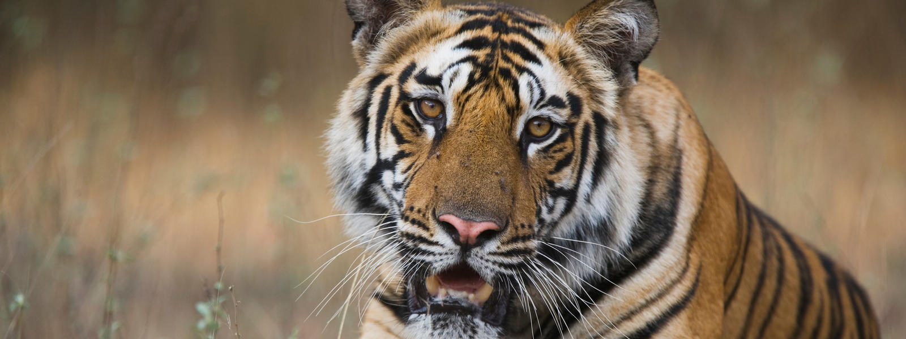

Los tigres son los más emblemáticos de los grandes felinos. Su hermoso pelaje negro y anaranjado, además de sus largos bigotes blancos, son fuente de admiración e inspiración para muchos. Pero a pesar de ser tan venerados, también son vulnerables a la
extinción. Actualmente, tan solo unos 3,890 tigres silvestres habitan libremente en los bosques y las sabanas del mundo. Los tigres están perdiendo su hábitat diariamente debido a las actividades humanas y además son asesinados por los cazadores
furtivos para obtener sus pieles y otras partes de sus cuerpos.
¿Dónde viven los tigres? Los tigres se encuentran en hábitats increíblemente diversos: selvas tropicales, pastizales, sabanas e incluso manglares. Desafortunadamente, el 93% de las zonas históricas de su distribución ha desaparecido principalmente
debido a la expansión de la actividad humana. Salvar a los tigres significa salvar los bosques que son vitales para la salud del planeta. Tú puedes ayudar adoptando medidas que contribuyan a salvar los bosques donde viven los tigres.
¿Cuánto pesan los tigres? Los tigres son los más grandes de todos los felinos asiáticos y pesan hasta 300 kilogramos (660 libras). La subespecie de tigre más pequeña, el tigre de Sumatra, pesa unos 140 kilogramos (310 libras) como máximo.
En cada subespecie, los machos pesan más que las hembras.
¿Los tigres viven en grupos? Los tigres son animales solitarios, a excepción de las madres y sus cachorros. Los tigres solitarios deambulan por extensas zonas, también conocidas como áreas de distribución cuya extensión se determina por
la disponibilidad de alimento. Los tigres no patrullan sus zonas, pero marcan su dominio con orina y heces durante días o semanas para que otros tigres sepan que el espacio está ocupado.
¿Cómo identifican los científicos a cada uno de los tigres? Al igual que la huella digital humana, las rayas del tigre son únicas para cada individuo. Los científicos colocan cámaras ocultas (conocidas como cámaras trampa) y con ellas
toman fotos de los costados de los tigres. Con este método pueden identificar a cada uno de los ejemplares y contar correctamente la población en ciertas áreas. Contar los tigres y determinar dónde viven es un paso crítico para monitorear el progreso
que estamos logrando en torno a la protección de estas especies.
¿Cuánto tiempo viven los tigres? Se sabe que los tigres viven hasta 26 años de edad en la naturaleza. En promedio, los tigres hembra dan a luz de dos a cuatro cachorros a la vez y pueden hacerlo cada dos años. La supervivencia es difícil
para los cachorros ya que la mitad de todos los cachorros no logran vivir más de dos años.